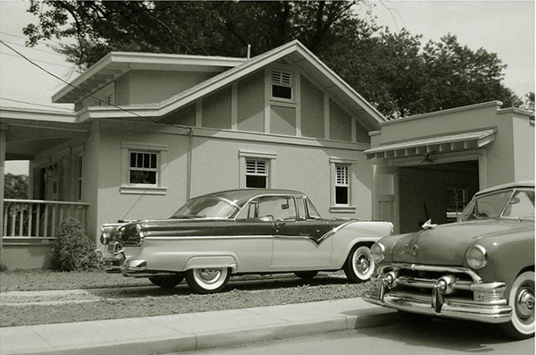
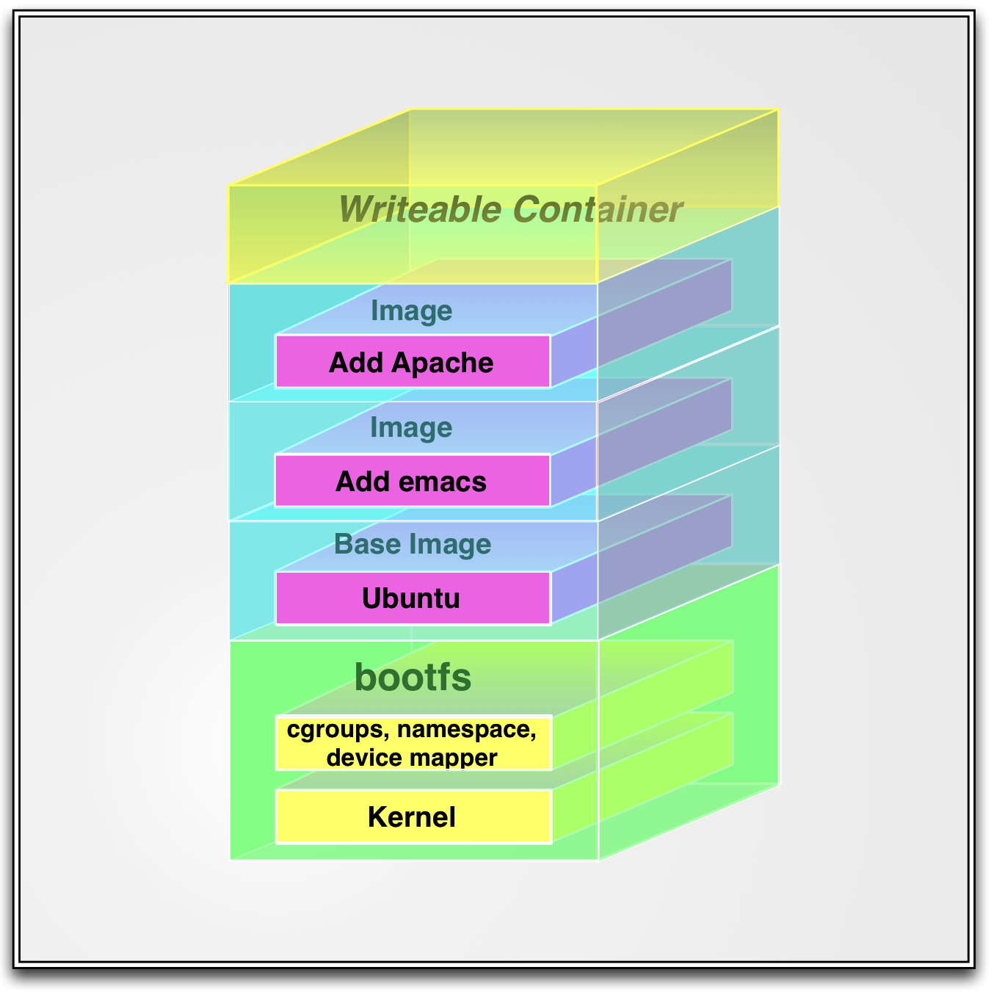

Introduction to Docker
Containerization is the new virtualization
James Turnbull
@kartar
who

- VP of Engineer at Kickstarter
- Advisor at Docker
- open source chap
- funny accent
(photo by Jennie Rainsford)
The Docker Book

www.dockerbook.com
Who are you folks?
What's this all about?
What is Docker?
Container virtualization
Build, ship, run
Build once.
Run in many places.
Isolated, layered, standard and content agnostic
But this isn't new?!!?

So why should I care?
-
Software delivery mechanism - a bit like a package!
-
Put your application in a container, run it anywhere
-
A bit like a VM but ...
Caring
Containers boot faster
Containers have less overhead
Containers bring native performance
Containers are Cloud & VM-compatible
Devs care about their app
Ops cares about the containers
Why developers care...
- Clean, safe, hygienic and portable
- No worries about dependencies
- Encourage good architecture
Why operations care...
- Make the lifecycle more efficient
- Eliminate inconsistencies
- Support segregation of duties
What can I use Docker for?
- Docker for CI/CD
- Packaging and deploying applications
- Build your own PAAS
- Deploy applications at hyperscale!
Does this work with Puppet or Chef?
- Chef and Puppet are state management tools
- Less complex
- Docker images are version controlled and layered
- Smaller, self-contained and lightweight
Technology Stack
- Runs on most Linux distros
- Boot2Docker for OSX and Windows
- **Windows in the works!**
- Uses Linux kernel features
Technology Stack

Docker Basics
-
Image & Dockerfile
-
The Docker Hub
-
Container
Building Docker images
FROM ubuntu
MAINTAINER James Turnbull "james@example.com"
RUN apt-get -qqy update
RUN apt-get install -qqy apache2
ADD index.html /var/www/
ENV APACHE_RUN_USER www-data
ENV APACHE_RUN_GROUP www-data
ENV APACHE_LOG_DIR /var/log/apache2
VOLUME [ "/var/log/apache2" ]
EXPOSE 80
ENTRYPOINT ["/usr/sbin/apache2"]
CMD ["-D", "FOREGROUND"]
Building the image
$ sudo docker build -t="jamtur01/apache2" .Sharing the image
$ sudo docker push jamtur01/apache2Running the container
$ sudo docker run --name mywebsite -ti -p 80:80 jamtur01/apache2But there's more!
What if we could get rid of . . .
SSHd
Managing a container
$ sudo docker exec XXXCrond in a container
Logging in a container
Logging container
$ sudo docker run --volumes-from mywebsite -ti ubuntu /bin/bashCreates a new architecture
-
Separates orthogonal concerns
-
Don't rebuild your app to change services
-
Have different policies in domains
-
Ship lighter apps